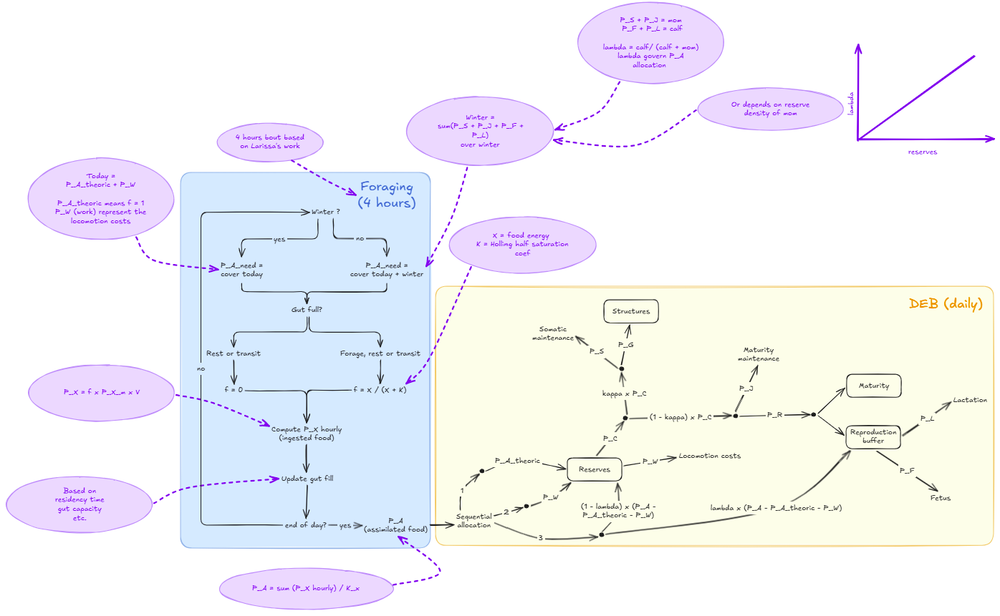

Building on an existing model
Benjamin Dupuis visited a colleague at the University of Winnipeg in Canada to discuss an existing model of muskox population responses to climate change. Together, they explored how to incorporate the costs and benefits animals experience while moving through Arctic landscapes.
Connecting behaviour and energy
The developing framework links foraging and movement to energy reserves and allocation. These individual processes provide a route towards understanding changes at population level.
The team intends to explore responses to snow conditions and hunting events. Collaboration with Astrid Oberborbeck Andersen will help connect scenario development with anthropological research and the concerns of hunters.
A tool in development
The longer-term aim is to co-design a conservation toolkit with hunters and wildlife managers. The work described here is model development; management scenarios and results will be shared as the research progresses.
Source material: SPECIES WP3 project update.